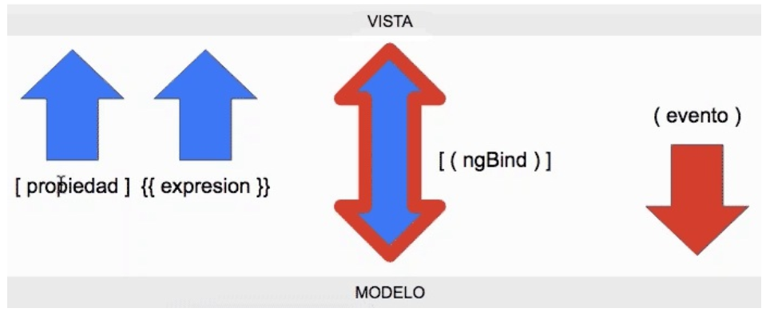

<div class="container">

  <main>
    <section class="row">
          <h3 class="text-center">
            Flujo de la información: de la vista al modelo y del modelo a la vista
          </h3>
      <div class="row">
          <p>
              El programador ahora será capaz de expresar cuándo una información debe ir del modelo hacia la vista y
              cuándo debe ir desde la vista al modelo. Para ello usamos las anteriores "piezas" o "herramientas" en el
              HTML, las cuales tienen definida de antemano un sentido para el flujo de los datos.
          </p>
      </div>
      <div class="row">
        <div class="col">
          <ul>
            <li>
                Las <b>propiedades</b> tienen un flujo desde el modelo a la vista.
            </li>
            <li>
                Las <b>expresiones</b> también viajan desde el modelo a la vista. 
            </li>
            <li>
                El <b>binding</b> (a dos sentidos, o doble binding). En este
                caso la información fluye en ambos sentidos, desde el modelo a la vista y desde la vista al modelo.
            </li>
            <li>
                Los <b>eventos</b> no es que necesariamente hagan fluir un dato, pero sí se considera un flujo de
                aplicación, en este caso de la vista al modelo.
            </li>
          </ul>
        </div>
        <div class="col">
            <figure class="figure">
                
                <figcaption class="figure-caption text-center">Resumen del flujo de la información en Angular.</figcaption>
              </figure>
        </div>
      </div>
    </section>

    <section class="row">
      <h3 >Ejemplos de Sintaxis: Propiedades, Expresiones, Binding y Eventos.</h3>
      <div class="row">
          <article class="col">
            <header>Propiedades</header>
            <p>
                A continuación mostramos una serie de propiedades no estándar del HTML, generadas por Angular 2 y disponibles
                para aplicar tanto en etiquetas HTML comunes como en componentes personalizados.                
            </p>
            <code>[hidden]="!visible"</code>
            <code>[class]="clase"</code>
            <code>[href]="enlace"</code>
          </article>
          <article class="col">
              <header>Expresiones</header>
              <p>Las expresiones sirven para:</p>
              <ul>
                <li>Acceder al valor de las variables desde la vista.<br>
                <b>Ej: X = {{ x }}</b></li>
                <li>Resolver expresiones algebraicas.<br>
                <b>Ej: 1 + 1 = {{ 1+1 }}</b></li>
              </ul>
          </article>
          <article class="col">
              <header>Binding</header>
              <p>
                  Para poder usar la <b>directiva</b> ngModel tendrás que hacer el import de
                  FormsModule.
              </p>
              <code>import FormsModule from '@angular/forms'</code>
              <p class="mt-2">Introduzca un texto y observe el comportamiento.</p>
              <input type="text" [(ngModel)]="texto" class="mt-0"><br>
              <p class="mt-2">Texto: {{ texto }}</p>
          </article>
          <article class="col justify-content-center">
              <header>Eventos</header>
              <p>Compruebe cómo aparece y desaparece el texto al pulsar el botón.
                Para el efecto, hemos usado la propiedad [hidden] anteriormente mencionada.
              </p>
              <button (click)="showHide()" id="btnMostrar" class="btn btn-primary ml-auto">{{ txtBoton }}</button>
              <p [hidden]="!visible" class="text-center">Ahora me ves..</p>
          </article>
      </div>

    </section>
  </main>
</div>
